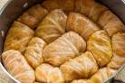

Sarma

Sarma, commonly marketed as stuffed grape leaves or stuffed cabbage leaves, is a stuffed dish in Southeastern European and Middle Eastern cuisine that comprises fermented leaves—such as cabbage, patencia dock, collard, grapevine, kale or chard leaves—rolled around a filling of grains (such as rice), minced meat, or both. Sarma is part of the broader category of stuffed dishes known as dolma.
Ingredients
- 1 large head cabbage
- 1 pound lean ground beef
- 1/2 pound ground pork
- 1/2 pound ground ham
- 1 cup uncooked long-grain white rice
- 1 onion, finely chopped
- 1 egg
- 1/2 teaspoon garlic powder
- 1 teaspoon salt
- 1 teaspoon coarse ground black pepper
- 1 pound sauerkraut
- 1 cup tomato juice
- water to cover
Steps
- Place cabbage in the freezer for a few days. The night before making the rolls, take it out to thaw.
- In a large bowl, combine the beef, pork, ham, rice, onion, egg, garlic powder, salt and pepper. Mix well. Form meat mixture into oblong balls, using 1/2 cup of the mixture at a time. Then, wrap a cabbage leaf around each ball.
- Spread the sauerkraut in the bottom of a large pot, then layer cabbage rolls on top, placing them seam-side down. Pour tomato juice over rolls, then add enough water to cover. Bring to a boil, then reduce heat to low and simmer for about 3 hours, adding more water as necessary.